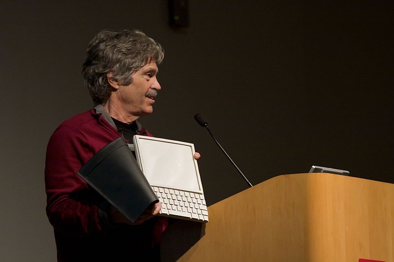

Né le 17 mai 1940 à Springfield au Massachusetts, est un informaticien américain. Après des études à l'université du Colorado à Boulder, il fait un Ph.D. d'informatique à l'université d'Utah de 1966 à 1969, avec David Evans (son directeur de thèse) et Ivan Sutherland. Il rejoint les laboratoires PARC de Xerox en 1970, où il travaille sur le langage Smalltalk et sur la conceptualisation de l'ordinateur personnel moderne. Alan Kay est un des pères de la programmation orientée objet. Il rejoint au début des années 1980 la firme Atari où il occupe le poste de directeur scientifique. Après un séjour à Paris, au Centre mondial informatique et ressource humaine (CMI), il rejoint en 1984 la société Apple. Il travaille pour Hewlett Packard jusqu'en juillet 2005. Il reçoit en 2003 le prix Turing de l'ACM pour ses travaux sur la programmation orientée objet, ainsi que le prix Kyoto.
Alan Kay publie en 1972 un article nommé « Un ordinateur personnel pour enfants de tous âges », l’appareil portatif à visée éducative qu’il imagine semble venir de trente ans dans le futur : une tablette non tactile dotée d’un clavier et connectée à Internet, tel un BlackBerry géant de la fin des années 2000. Beaucoup trop en avance sur son temps, le DynaBook — c’est son nom — reste sans surprise à l’état de spéculation philosophique. Mais le centre de recherche où travaille Alan Kay, Xerox PARC, s’en inspire pour créer une sorte de « DynaBook intérimaire » : un mini-ordinateur à interface graphique WYSIWYG (what you see is what you get), pilotable par une souris à trois boutons et reprenant les grandes fonctionnalités du système NLS. Reconnaissable à son écran vertical et ayant le gabarit d’une grosse table de chevet, Le Xerox Alto un chaînon manquant entre les ordinateurs mainframe, grosses armoires auxquelles sont reliés plusieurs terminaux individuels, et les futurs micro-ordinateurs personnels que l’on pose devant soi sur une table. Il dispose d’entre 96 et 512 ko de mémoire vive, d’une CPU cadencée à 5,8 MHz et peut accueillir une cartouche mémoire de 2,5 Mo — des caractéristiques de titan pour l’époque. Seuls 2000 exemplaires sont « distribués » au cours de la décennie, car aucun n’est mis sur le marché. Le Computer History Museum estime que si cela avait été le cas, l’Alto aurait dû être vendu à un prix de plus de 10 000 dollars de l’époque, soit 50 000 euros d’aujourd’hui. Malgré son coût mirobolant, les innovations de l’Alto inspireront l’industrie pour toute une décennie. En 1979, des visites à Xerox seront organisées pour les ingénieurs d’Apple, qui s’inspireront de l’interface graphique de l’Alto pour les futurs Apple Lisa et Macintosh.
er
ème
nd